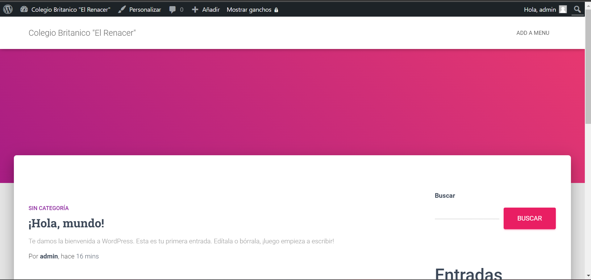

RESUMEN DE XAMPP
Muy buenos dias
mi nombre es manuela suarez y monica apache
el sabado con el instructor jeyson galvis nos enseño a instalar en xampp y wordpress
XAMPP esta aplicacion nos sirve para crear diferentes plataformas o servidores de forma gratis sin pagar nada en algunas ocaciones no se necesita internet para realizar esto sin necesidad de internet
por esta plataforma los usuarios pueden crear su cuenta en wordpress
tambien se puede descargar gratuita
PANEL DE CONTROL
PHPMYADMIN CONTROL DE USUSARIO

WORDPRESS